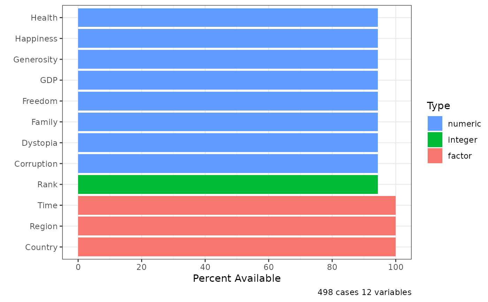

contents provides describes of the contents of a data frame.
Examples
library(rPackageTutorial)
df_info <- contents(happiness)
df_info
#> Data frame: happiness
#> 498 observations and 12 variables
#> size: 0.1 Mb
#> pos varname type n_unique n_miss pct_miss
#> 1 Time factor 3 0 0.00000
#> 2 Region factor 10 0 0.00000
#> 3 Country factor 166 0 0.00000
#> 4 Happiness numeric 450 28 0.05622
#> 5 Rank integer 159 28 0.05622
#> 6 GDP numeric 468 28 0.05622
#> 7 Family numeric 469 28 0.05622
#> 8 Health numeric 467 28 0.05622
#> 9 Freedom numeric 463 28 0.05622
#> 10 Corruption numeric 467 28 0.05622
#> 11 Generosity numeric 469 28 0.05622
#> 12 Dystopia numeric 471 28 0.05622
plot(df_info)
